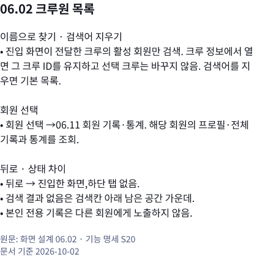
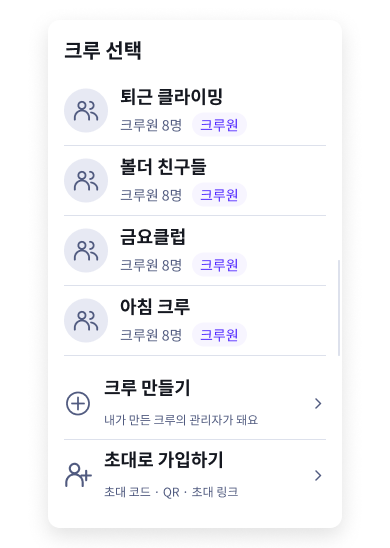
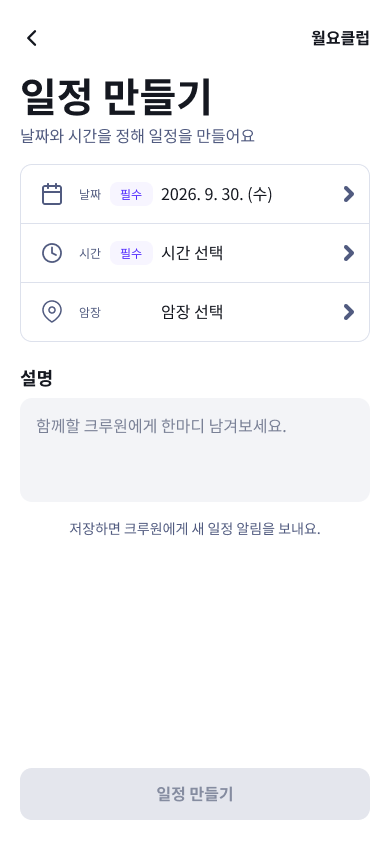
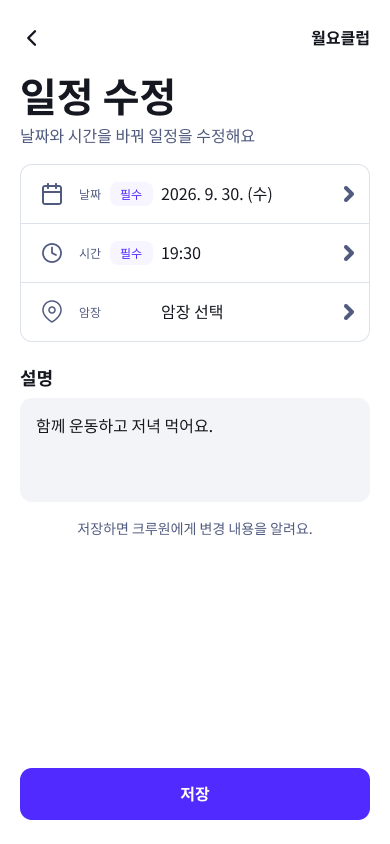
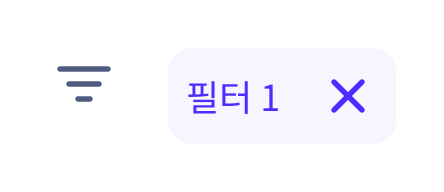
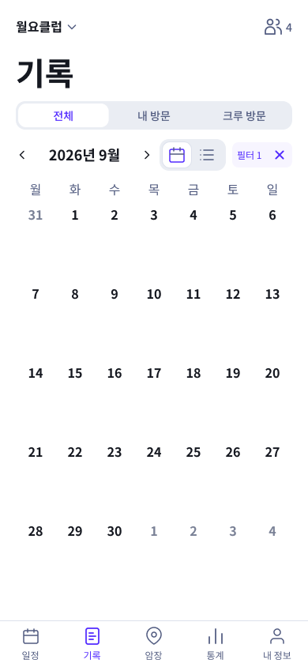
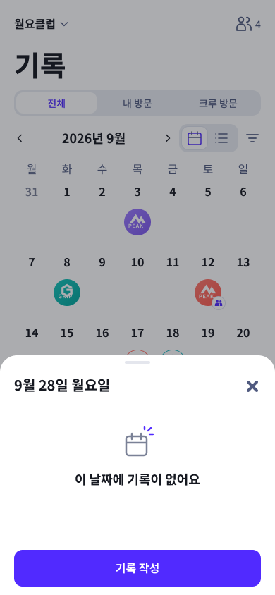

2026-10-02 · 이번에 고친 항목만 정리했습니다. 아래 사진은 수정 후 모습입니다.
01 · 통계 하단 메뉴
선택하지 않은 암장 아이콘을 회색으로
통계가 선택됐는데 암장 아이콘도 보라색으로 보이던 부분을 고쳤습니다. 이제 통계 메뉴만 보라색입니다.
04.01.01의 하단 부분 · 사진을 누르면 전체 화면
같은 부품을 사용하는04.01.02·04.01.03에도 반영
02 · 02.08.03 크루 방문 상세
암장명과 도장을 일치
산호색 도장은 피크 강남의 예시인데 이름이 ‘피크 성수’로 적혀 있었습니다. 이름을 ‘피크 강남’으로 고쳤습니다.
도장 모양과 참석 표시는 유지하고 예시 암장명만 교정
03 · 06.02 화면 옆 기능 명세
어느 크루의 회원인지 명확하게
크루 정보에서 회원 목록으로 들어오면 그 크루의 회원을 보여주도록 설명을 보완했습니다. 목록을 보는 것만으로 일정의 선택 크루가 바뀌지 않습니다.

화면 디자인 변경 없이 옆 명세의 설명만 수정
04 · 05.02 프로필 수정 · 코멘트 반영
Apple 계정 표시 견본 추가
기본 Google 계정 화면 옆에 로그인 계정 칸만 추가했습니다. 같은 계정 부품을 사용하며 ‘Apple 계정’과 애플 아이콘으로 표시합니다. 전체 화면은 복제하지 않았습니다.
Google과 같은32×32 아이콘 영역 · Figma 견본05 · 06.10 크루 선택창 · 코멘트 반영
최대 높이와 목록 스크롤
크루1~3개는 내용에 맞춰 높이를 조절합니다.4개 이상이면 목록280·창 최대508로 고정합니다. 아래 사진은 목록을 끝까지 내린 모습이며 제목·만들기·가입은 그대로입니다.

전체 화면 대신 선택창 부품만 옆에 추가 · Figma 견본06 · 일정·기록 달력 · 코멘트 반영
점·더하기·숫자 간격 통일
점과 더하기, 더하기와 숫자 사이를 모두4로 맞췄습니다. 숫자는 최대99이며 나머지가99개 이상이면 ‘● + 99’로 표시합니다. 정확한 전체 개수는 날짜 시트에서 확인합니다.
 일정 달력15일에 ● + 99 추가 · 기존16일 ● + 3 유지기존 기록13건 날짜 칸
일정 달력15일에 ● + 99 추가 · 기존16일 ● + 3 유지기존 기록13건 날짜 칸07 · 01.01.02 일정 · 가입 크루 없음
일정 탭 안에 크루 가입 안내
가입한 크루가 없으면 달력 대신 ‘크루에 가입해보세요’와 가입·만들기 버튼을 표시합니다. 가입은 강제하지 않고 하단 메뉴를 유지합니다.
01.01 일정의 상태 시안 · Figma08 · 01.03.01 날짜 일정 시트
암장 미정 도장 크기 통일
암장 미정 도장을44에서60으로 맞췄습니다. 다른 도장과 같은60×60이며 옆 글자 시작 위치도 같습니다.

09 · 01.04 일정 입력 폼
사진처럼 세 행 입력 묶음으로 변경
날짜·시간·암장을 하나의 테두리 안에 배치했습니다. 날짜·시간만 필수 표시, 암장·설명은 배지 없음. 요청한 저장 안내 문구를 삭제했고 암장 미정 저장은 유지합니다.

01.04.01 만들기
01.04.02 수정10 · 기록 달력·목록 필터 적용
필터 버튼의 적용 표시
조건을 적용하면 연보라 배경의 ‘필터 N ×’로 표시합니다. 글자를 누르면 필터 창을 열고, ×를 누르면 창 없이 모든 추가 조건을 바로 해제합니다. 숫자는 적용한 조건 종류 수입니다. 기존 기록 없음·필터 적용 시안을 사용했습니다.

공통 버튼 · 기본24×24 / 적용76×32
02.01.02 · 9월1~2일 적용 후 기록 없음02.02.02 · 피크 성수 조건 적용11 · 02.03.02 날짜 기록 시트
기록 없음 디자인을 일정과 통일
작은 왼쪽 문구를 달력 그림과 중앙 굵은 제목으로 바꿨습니다. 같은 공통 부품을 사용하며 기록 작성 버튼은 유지합니다.
